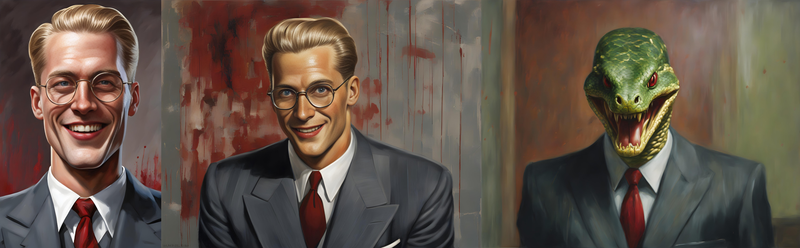

Tymely News
New Release: Demon for President!
I'm delighted to announce the release of a new book! The third volume of Ashen Blades, Demon for President! is now available as an Ebook!

The Hunter's demonic arch-nemesis, Vogerath, returns to Earth once more, but this time, he's running for President of the United States, on the 2024 ballot! Worse yet, the demon’s unique power to be in multiple places at once allows him to convincingly pretend to be identical twins, running as both a Republican and Democrat!The other candidates all drop out of the race under mysterious circumstances and with his best competition being himself, he's practically assured a win!
Soon, the American people are lapping up the snake-in-a-suit’s every word as if it were ambrosia, calling out his name at every turn, magically charmed to believe he’s the best thing since sliced bread, despite the checkered, criminal history of his “family.”
Hard pressed to get rid of him, the half-demon Hunter and her allies kill him repeatedly, but he pops back up like a bad weed, making all of his appointments on time, photogenically kissing babies, cutting the ribbons of stores and donating laundered blood-money to charitable causes.
Will the hunter manage to end the demon's presidential campaign before election day? If she doesn’t, the USA may just get a Demon for President! Buy this book today and find out for yourself!
There's also a promotional page for this book, which includes links to political pins you can buy.
Tags: ashen-blades, novel, publishing
Stickers of the Hunter

Ryan Johnson, the artist that does my book covers, sometimes also does little tie-in products that can be picked up from his store page, like the prototype sticker imaged here, which he kindly sent to me so I could see how they'd turn out.
The currently sold version omits the text and just shows the Hunter/Little Miss Secret/LMS.
Personally, I hope to see other artistic tie-ins to my work in the future. I even get a little money from each sale, since they're based on my writing.
Tags: ashen-blades
The Third Wish, in Ebook and Print!

Plagued by horrific nightmares, the consequences of war and reeling from the loss of his family, the Steel Wizard, Levi Jacobs copes by throwing himself into work, but old enemies gain the power to travel through time, refusing to give him a moment to grieve. Making matters worse, an impatient and violent alien pirate lurks in orbit.Far from friendly, the alien pirate is boiling with rage over several massive blows to his pride at the hands of humanoids. Unable to kill those responsible, instead he plots revenge on their child, Levi, and everyone around him, to regain face in the eyes of his own kind, for whom personal pride is literally everything, including social ranking and the right to rule.
While Levi's busy dealing with the pirate, a deposed prince scours history for allies, putting together a frightening misfit team of spies, dangerous trolls and wizards that all have a grudge to settle with Levi and his family. Intent on changing history to suit themselves, they strike at the foundations of the present, threatening to kill Levi's father at a pivotal moment on which the history of the galaxy hangs.
Will Levi solve this mess and move forward with his life or will he buckle under the responsibility of protecting both what he has and what he's lost?
I'm very pleased to announce that book three of The Wizard's Scion, The Third Wish is now available for 3.99 in Ebook or 18.99 in paperback (US dollars).
I hope you'll enjoy it as much as I did!

Tags: ashen-blades, novel, publishing
She Goes to War, Now in Print!
The second volume of the Ashen Blades series, titled She Goes to War, is available in print! In addition, She Goes to Summer Camp, the short story included in She Goes to War, is available both as a free Ebook and in print.
If you want to own both, buy the novel. If you want to get a free taste of the Ashen Blades series, claim your free copy of She Goes to Summer Camp today!
She Goes to War

The Hunter never wanted to go to war, but in 1972, she senses the return of her demonic arch-nemesis, Vogerath, to the world. Following his magic like a bloodhound, she finds herself inexplicably drawn to Vietnam, a war zone.With a pressing need to kill Vogerath, who claims to be the serpent from the Garden of Eden, the half-demon Hunter is joined by her detective partner, Clayton Simmons, and a powerful witch, Verda Bagley.
It was meant to be a simple search and destroy mission, but nothing in the jungles of Vietnam is ever simple and their plans go off the rails the moment the Hunter sets foot on the ground. She’s overcome by the magic of the jungle, which causes her to forget her humanity and transform into a great, black cat with blue eyes!
Her team are forced to subdue her, to bring her back to her senses, but the consequences of her instinct-driven actions leave them troubled, because she killed a demon disguised as an American soldier and his best friend wants revenge! As this fresh, unwanted conflict comes to a close, the Hunter’s hands are reluctantly stained with human blood.
Vogerath’s jungle hideout is surrounded by soldiers and the raid begins, but the Hunter’s plan continues to go wrong. After a unit of tanks is overrun, the US military throws everything they’ve got at the demons, inadvertently playing into Vogerath’s hands! The demon grows stronger with each attack and awaits the power of a nuclear strike, planning to use it to open a portal to Hell, so endless legions of demons can march forth to conquer the Earth!
Will the Hunter and her friends stop Vogerath in time or will the world be conquered by demons? Buy this book today and find out!
Includes a bonus novella: She Goes to Summer Camp, in which the Hunter faces the most unthinkable and horrifying of challenges: teenagers.
She Goes to Summer Camp

Camp Sapphire Friendship, a summer camp for teens, was the last place the Hunter wanted to go, but she'd made a vow to protect humanity from demons, no matter where they appeared and in 1986, her team of demon-slaying experts is called on to investigate. However, to make things even worse, the Hunter's team leader sends her into the camp as an undercover operative, under the guise of a regular teen, despite the fact that the half-demon girl being old enough to be the grandmother of the kids at camp.She's soon caught up in the daily minutiae of camp, learning a few new things along the way, while followed around like a puppy by a new "friend", a motor-mouthed girl that never shuts up. On the very first day, she also acquires a trio of teenage foes in the form of some valley-girl sisters from Los Angeles, who take every opportunity to insult and plays pranks on her.
However, despite the innocent look of the place, danger lurks around every corner, because the owner of the camp, Miss Macie Weber, is an untrained witch, whose unknowing, haywire magic threatens to kill everyone by summoning powerful and vengeful nature spirits, on top of the demons already lurking among the humans at camp!
Will the Hunter find and slay the the demons or will the nature spirits take offense at her mere presence, because she's had the Jungle Spirit stuck inside her head since 1972?
Download today and find out!
Tags: ashen-blades, novel, publishing
She Goes to War, Coming April 5th!
The second volume of the Ashen Blades series, titled She Goes to War, is now available for pre-order as an Ebook. The print edition still has a few details to work out, but should be available soon.
She Goes to War will be available on April 5th, 2024!
This one is special to me, because a friend of mine that fought in Vietnam talked me into writing it and then served as my primary source of information on the jungles of Vietnam. According to him, I hit the nail on the head and the details of the setting are as close to perfect as they can be.
I hope you'll enjoy it!
Due to how serious and emotionally difficult this novel was to write, I decided to pair it with a rather humorous bonus novella, She Goes to Summer Camp, in which our stalwart heroine goes undercover at a summer camp where teens have gone missing four years in a row, in search of the demon responsible, but nothing could have prepared her for the horrors of dealing with teenagers.
When final arrangements for art are complete, She Goes to Summer Camp will also be released as a short story as part of my Short of Tyme collection.
The Hunter never wanted to go to war, but in 1972, she senses the return of her demonic arch-nemesis, Vogerath, to the world. Following his magic like a bloodhound, she finds herself inexplicably drawn to Vietnam, a war zone.With a pressing need to kill Vogerath, who claims to be the serpent from the Garden of Eden, the half-demon Hunter is joined by her detective partner, Clayton Simmons, and a powerful witch, Verda Bagley.
It was meant to be a simple search and destroy mission, but nothing in the jungles of Vietnam is ever simple and their plans go off the rails the moment the Hunter sets foot on the ground. She’s overcome by the magic of the jungle, which causes her to forget her humanity and transform into a great, black cat with blue eyes!
Her team are forced to subdue her, to bring her back to her senses, but the consequences of her instinct-driven actions leave them troubled, because she killed a demon disguised as an American soldier and his best friend wants revenge! As this fresh, unwanted conflict comes to a close, the Hunter’s hands are reluctantly stained with human blood.
Vogerath’s jungle hideout is surrounded by soldiers and the raid begins, but the Hunter’s plan continues to go wrong. After a unit of tanks is overrun, the US military throws everything they’ve got at the demons, inadvertently playing into Vogerath’s hands! The demon grows stronger with each attack and awaits the power of a nuclear strike, planning to use it to open a portal to Hell, so endless legions of demons can march forth to conquer the Earth!
Will the Hunter and her friends stop Vogerath in time or will the world be conquered by demons? Buy this book today and find out!
Includes a bonus novella: She Goes to Summer Camp, in which the Hunter faces the most unthinkable and horrifying of challenges: teenagers.
Tags: ashen-blades, novel, publishing
Character Feature: Otto Vogerath (AKA Pride)

Three AI-generated images of Vogerath. In all three images, he wears a gray suit and blood-red power tie.
(Left) A shot focused on just the head of the man and he smiles evilly, very pleased with himself. There's fresh blood on the wall behind him.
(Middle) A wider-framed shot, in which he's still smiling, but the grin isn't quite so wide and the blood on the wall is more smeared than spattered.
(Right) The blood on the wall is long dry and Vogerath has dropped the Illusion of humanity he normally portrays, revealing his true nature as a snake demon.

Otto Vogerath may be many things, including a German man that supposedly came to the states before the Nazis took over Germany, the ring leader of a circus, an abusive husband and father, a criminal, a mob boss, a mass-murderer, a mad genius plotting world domination, but all of that pales in comparison to his true identity: Otto Vogerath is one of the seven Arch-demons that rule Hell, where he's known as Pride.
He's very intelligent and often runs mental circles around his opponents, treating them almost like puppets dangling from strings, continually manipulating them into doing exactly what he wants. In that regard, he's playing a grand-scale game of chess, while his opponents think they're playing a simple hand of go-fish for no stakes, when in fact, the stakes couldn't be higher.
Even when he appears to be losing, he's usually accomplishing something of lasting value to his long-term goal of galactic domination or just possibly, taking over Hell. What really motivates him is a mystery to all others, but he'll never give anyone a straight answer.
Vogerath is extremely old, having been born before the dawn of humanity, which makes it almost believable when he claims to be the Serpent from the Garden of Eden.
Whether that's true or not, however, he is the living embodiment of Pride, literally believing himself to be a cut above all others, his greatest flaw.
However, when his plans start falling apart, making him look the fool, he can be extremely dangerous and unpredictable.
When his life is on the line, he becomes a total coward, because in his mind, he's the most important person in the multiverse, bar none. Therefore, leaving his minions to die while he escapes is perfectly acceptable.
Vogerath is the arch-nemesis of Little Miss Secret, because he's responsible for murdering her parents. His mysterious plans revolve around the girl, because he has need of the unique powers of a half-demon. He may even be responsible for arranging for her to be born.
Tags: ashen-blades, character-feature
Special Feature: On Magical Elements

A collage of AI generated images representing the various elements, laid out as a cohesive chart of the elements.
All users of magic in the Ashen Blades series use a system of metaphors for classifying magic in to manageable categories and these categories are not always the same, varying by culture.
Witches use a system based on four basic material elements, including Air, Fire, Earth and Water, as well as two basic elements representing polar opposite energies: Life and The Void. Various other elements formed by combining the basic elements together.
During book one, the witches call Life 'Spirit', but Spirit is actually a sub-element of Life magic, a conclusion Verda Bagley arrives at during book two.
Material Elements
The four material elements represent all physical materials in the known universe, with the exception of difficult to classify materials, such as dark matter, which science doesn't even understand.
Mastery over any material element allows shaping it and levitating it, with magic that mimics telekinesis.
Air
The air, representing not just the breathable gasses, but all gasses, to a certain extent, as well as air currents and weather.
Air is a difficult element to master and witches that bear a natural talent with it can be quite dangerous when they lose control of their emotions, leading to shifts in weather outdoors, or poltergeist-like activity, indoors.
Isabel Grant and Verda Bagley are witches that wield Air magic.
Fire
Fire represents the more energetic elements of nature, but isn't considered a destructive influence, because the materials produced by the action of Fire are still useful to living processes.
Fire includes the fourth state of matter, plasma, and nuclear reactions.
Fire is one of the easiest elements to learn and untrained witches with a talent for it are unfairly feared, though in truth, Fire magic is actually quite safe, following guidelines similar to the real thing: it takes effort to start a fire and a large lapse in judgment for a controlled flame to get out of control.
Annmarie Nosset and her daughter, Little Miss Secret, are witches that wield exceptionally hot Fire magic.
Earth
Earth represents the ground we walk on and the processes that take place within it, including tectonic forces and volcanism (though fire is also involved in that). Hurling rocks with this form of magic is relatively easy, but shaping dirt and stone takes time and dedication to master.
Earth is relatively easy to get started with, because clay can easily be used for training exercises. However, witches with a natural talent for Earth can sometimes become quite terrifying to deal with, if their emotions get out of control, leading to earthquakes and other upheavals of the earth.
To a lesser extent, Earth also represents all solid matter.
Isabel Grant is a witch that uses Earth magic. In book two, Simmons demonstrates some ability to use Earth magic.
Water
Water is absolutely essential for all known living processes and users of Water magic can be exceptionally dangerous, because Water can readily be shaped into cutting and impaling attacks.
Water magic is quite difficult to master and rarely goes out of control, because wielding it requires supreme level of control or the water will simply go back to doing what it normally does.
Verda Bagley is a witch that uses Water magic.
Energetic Elements
Life
Life is what binds all the other elements together, allowing them to combine in infinite complexity. It's also absolutely essential to all living processes.
There are many sub-classes of Life magic and it takes in many things that don't readily fit in other elements, including curses and counter-curses.
Paradoxically (see below, regarding The Void), demons use a sub-class of Life magic to infiltrate the minds and hearts of humans: Spirit magic. This allows them to arrive on Earth in spiritual form, whispering inside the minds of mankind, until they convince the human to taint their own soul with such a heavy burden of sin, the demon takes possession of both their soul and body.
Life is Verda Bagley's strongest element as a witch, making her an expert on curses, counter-curses and healing magic. In book two, she also demonstrates knowledge of what's largely considered the dark-side of Life magic: Necromancy, which may be a Void-touched off-shoot of Life magic, though this is debatable, because Necromancy can be used to return a dead thing to life.
The Void
The Void represents the forces of death and entropy. It's ever hungry to consume the multiverse, breaking it all back down until there's nothing left but The Void. Void magic readily combines with the material elements, transforming them into mocking parodies of themselves.
The only known direct use of Void magic is for spatial manipulation, including teleportation and the formation of a pocket dimension.
For teleportation, it normally has to be paired with another element, to form a doorway. Form example, Little Miss Secret uses Void magic combined with Shadow magic to teleport from shadow to shadow, a spell known as shadow-stepping. How this works is particularly strange: the Void magic user simply steps out of the entire multiverse, and steps into The Void. From there, they then step back into the multiverse, at the place of their choosing. Hypothetically, it might be possible to travel through time the same way.
Demons all tap Void magic to one extent or another.
Little Miss Secret uses Void magic, which she got from her demonic ancestry. Her Top Hat contains a pocket dimension that stores most of the things she owns.
Secondary Material Elements
The secondary material elements are formed by combining adjacent material elements. These can be neatly categorized as scientific and natural elements.
Smoke
Smoke is the combination of Air and Fire, usually coming into being when Wood is burned. While it has its place in the natural world, its considered a scientific element, having been extensively, shaped, controlled and shackled by mankind.
Little Miss Secret makes extensive use of Smoke magic mixed with Shadow magic to conjure the weapons stored in her hat into her hands.
Metal
Metal is the strongest of the scientific elements, because most metals aren't found in their pure form in nature, requiring Fire to forge Earth into something different from the two.
In book two, Simmons is stated to have been studying Metal magic.
Wood
Wood magic is difficult to master, but gives power to manipulate plants in myriad ways, accelerating growth or granting power to move to these normally slow forms of life.
Wood is one of Verda Bagley's strongest elements.
Animal
Animal magic allows manipulating animal life of all kinds, including humans.
Most demons use some measure of Animal magic, because their first form is almost always that of an animal.
Mashu'ra uses this form of magic to transform the body of Simmons, giving him great strength and durability.
In book two, Verda Bagley demonstrates some very minor Animal magic, allowing herself to see in the dark, much like a cat.
Master Lagrow, the wizard that was Master of the Ashen Blades in book one, uses a very narrow class of Animal magic combined with Life magic to enact curse-like spells on living beings, fooling them into believing he's their friend and ally.
Void-Touched Elements
The Void-touched elements are all a combination of another element and The Void, leading that element closer to the end of all things.
Vacuum
Vacuum is the absence of Air, which can be quite damaging to unprotected living things.
Shadow
Shadow is Smoke that has lost its substance, leaving behind nothing but darkness that blots out the light.
Little Miss Secret makes extensive use of Shadow magic to conjure her weapons into her hands, in combination with her Smoke magic. She also combines it with Void magic, to teleport from shadow to shadow.
Ultraviolet
Ironically, combining Fire magic with the energy of the Void increases the power of the flame until its capable of consuming almost anything, producing a temperature so high, the flame glows in the ultraviolet spectrum.
Effectively, the ultraviolet flame has the endless hunger of the Void, seeking to burn all until there's nothing left.
Little Miss Secret learned to produce a UV flame just after seeing her mother use high-intensity blue flames, effectively combining her witch and demon powers into the most intense spell in her magic arsenal.
Poison
Derived from Metal and Void, poison represents anything that's toxic to animals, even including substances that are normally safe or even essential for life, but can be lethal if the dose is high enough, such as salt. Much of the toxins in the world are metals in one form or another, hence the close relationship with it.
This category of magic also includes any form of corrosive magic.
Ash
Ash is Earth that's been scorched so hot it loses all useful qualities, becoming inherently dangerous, choking out life. It takes time and the application of other elements to revitalize volcanic ash, but it can eventually become fertilizer.
Bone
Strangely, bone is the combination of Wood and Void. When all life leaves wood, the bark falls away and the bleached, dead wood starts to resembles bone.
Bone magic can only manipulate the skeletal structures of formerly living things, leading to such abominations as walking skeletons with no will of their own.
Ice
Water that loses most of its energy freezes and loses its life-giving qualities. Thus, ice is the combination of Water and Void. Ice magic is easy to master in snowy or arctic environments, but far less common in warmer climates.
Blood
Originally considered a form of Necromancy, but later categorized as a corruption of Animal magic by The Void, Blood magic allows the manipulation of living blood. It's one of the most lethal forms of magic, allowing human bodies to be torn apart from the inside-out, regardless of skill level.
Witches with a natural talent for blood magic are often surrounded by carnage worked by their own, out of control emotions and the more carnage they see, the more out of control their emotions become, until they accept their power or self-destruct as they internalize the realization they're responsible for all the deaths they've seen their power inflict on others.
Unfortunately, those that survive the trauma of such power coming to the surface usually become serial killers, thinking it gives them the right to be judge, jury and executioner.
Blood magic can be used to heal the body, but the malign uses far outweigh its benefits to society.
Whether it's just or not, Blood witches are feared and hunted by nearly all other witches, because they're too powerful to control and it's too easy for them to kill with an errant thought.
Additional Elements
This list is hardly exhaustive and there's a myriad of ways to combine the elements that aren't easy to display on a chart. For example, Steam magic is a combination of Fire and Water.
Other Elemental Systems
All of this is simply a useful set of metaphors to aid understanding. In addition to this system, demons also use their own systems of metaphors:
The most common system demons use relates everything to the various substances in the human body, including blood, bile, urine, bone, muscle, etc. That system sounds very messy and is very unappealing to non-demons. Demons, on the other hand, love it, because it suits their sick-minded nature.
The next most common approach relates the whole of creation to the seven deadly sins. Noble demons tend to favor this system, because it pays homage to the seven arch-demons that rule Hell.
Tags: ashen-blades
Character Feature: Verda Bagley

An AI generated image of Verda Bagley, in 1945.
Verda Bagley is an ally of Little Miss Secret, Simmons and Mashu'ra. She's also a field operative of the Order of Ash and Smoke with a lot of experience.
She's one of the most powerful witches in the world, but ironically doesn't consider herself to be one, instead thinking of herself as simply 'talented'.
She's a mother to her very core and uses nursery rhymes as a concentration aid to focus her mind for spell casting. She can often be heard singing in combat, to keep her mind from wandering.
She appears to be in her twenties, but is actually in her forties during She Hunts Demons. It isn't explicitly stated until book two, but her aging process has been unnaturally slowed by her magic.
She hates the common labels that come with her magic and only puts up with being called a witch, because that's the convenient term used by the others in the Order.
She also doesn't believe the creatures the Order fights are actually demons, because according to the beliefs of her religion (The Church of Jesus Christ of Latter Day Saints), demons don't have physical bodies, having been denied that opportunity when they rebelled against God, before the world was.
Instead, she considers them evil monsters that need to die, because their actions are the darkest kind of evil. Her theories about the demons are not well accepted by the Order, but toward the end of the book, she gains some indirect evidence she was right all along, leading her to conclude the so-called demons are actually Unseelie Fairies.
Like LMS, she absolutely hates demons that prey on children and will go out of her way to put them down.
As a witch, her best elements are Spirit, Water and Wood, but she also has a little mastery of Air and in book two, she starts experimenting with Animal magic. She's an expert on curses of all varieties and she often works to counter curses planted by demons.
Her favorite spells involve manipulating tree roots and branches to attack enemies or forming water into barriers or weapons. She also sometimes uses reversed curses, a technique she learned by observing the action of the protective spell surrounding Little Miss Secret. These are effectively delayed-action curses she places on herself that affect the first person to attack her.
Verda is the expert Little Miss Secret consulted when she was looking to counter the curse she lives with.
Aside from her magic, she fights with a shotgun and she's almost never without her switchblade, because sometimes magic fails.
Her best attributes are a keen intellect and a creative approach to any situation, both of which she can use in the heat of combat, with a cool and level head. Like Simmons and Little Miss Secret, Verda isn't one to give up easily and always has a new trick up her sleeve, whether it's magic or not.
She's extremely adverse to the idea of leaving behind or abandoning a friend and she'll go to great lengths to rescue them, almost regardless of the danger.
Tags: ashen-blades, character-feature
Character Feature: Mashu'ra

(Left) An AI generated image of Mashu'ra, in the form of a little, black kitten, with green eyes.
(Right) An AI generated image of Simmons in his cat-man form, wearing the magic, shape-shifting clothes Mashu'ra gave him, in the form of a tuxedo. His cat-man form is a result of Mashu'ra partially possessing his body.
Mashu'ra is often called Masher, because when spoken by others, a demon's true name gives power to summon or compel them. He's the little demon that lives inside Little Miss Secret's top hat, in the novel She Hunts Demons. He's stuck in the form of an adorable little, black kitten, a fact that annoys and embarrasses him.
Mashu'ra was originally her mother's familiar and as a result of that demon-witch's betrayal of demon-kind, he's also considered a traitor by demons.
He's an imp, which is effectively a juvenile demon that isn't yet strong enough to properly possess a human host. Imps normally grow in strength by feeding on the blood left-over from their master's human kills, until they're strong enough to possess and dominate a human host. Alternatively, an imp can be summoned by a witch to server as a familiar and fed raw magic until they mature.
With rare exception, demons gain an initial form from the first creature they possess and since they're normally too weak as an imp to possess a human, they take on animal traits. This is why demons tend to have such sharp senses of smell. Before that, they normally resemble one or both of their parents.
In the case of Mashu'ra, he was summoned into the body of a house cat by Annmarie Nosset, the mother of Little Miss Secret. When she was killed, he lost the power she fed him and shrunk in size until he became a kitten.
He normally looks after Little Miss Secret's arsenal of weapons, cleaning and loading her firearms for her, on top of keeping her collection of blades sharp, but please don't ask how a kitten accomplishes that, because it's a big secret!
Mashu'ra is an expert on both witch and demon magic, because he spent so many years serving one of the most powerful demon-witches the world ever saw.
He uses his magic to keep an eye on Little Miss Secret and her activities from inside her hat, so he's always up to date on current events, unless he's been napping.
During the early portions of She Hunts Demons, Mashu'ra watches Simmons, coming to respect the man enough to make him an unusual offer: if Simmons would allow Mashu'ra to possess his body, they would work as a team, to kill demons together. Seeing an opportunity to finally get into the field, Simmons accepts.
While an imp can possess a human body, they don't have the strength to suppress the human mind, which effectively leaves the human in charge, with the full strength of a demon! When Simmons uses this power, he grows extremely large, muscular and takes on feline features, includes claws, fangs and black fur.
In cat-man form, Simmons is in great pain, but the pain feeds Mashu'ra's power, making him very strong and durable.
When injured in cat-man form, he heals extremely rapidly, the pain of which feeds into Mashu'ra, becoming greater power and that goes back into Simmons, making him even stronger. As a result, this transformation makes him nigh-indestructible, but with a seriously dangerous caveat: the more damage Simmons takes, the more Mashu'ra's animal instincts flood his mind and the dumber he becomes. If things go too far, his higher mental functions shut down, leaving him running on raw emotion.
Even worse, the pain Simmons feels is like a powerful drug to Mashu'ra, causing him to get extremely high. In short, if the duo takes too much damage, they become an unstoppable killing machine that's a danger to everyone. When they finally calm down and separate, Mashu'ra is effectively left suffering the powerful after-effects of a drug over-dose. Being a demon, this can't kill him, but it can and does make him wish he were dead.
Demons have tried this combination of human and imp in the past, inevitably leading to an out of control killing machine. The secret sauce that keeps Simmons and Mashu'ra alive and functioning in this state is impossible for such evil beings to replicate: an incorruptible man willingly working with and trusting a demon for the sake of a common cause.
Late in the novel, as a result of destroying the wardrobe of Simmons, Mashu'ra gives the man a magic, demon-made, shape-shifting suit, which is able to take any form desired and automatically adjusts its size to match Simmons as he changes size. Incidentally, it also serves as light body armor that's able to stop bullets and staunch bleeding, which gives him a little extra protection, even when he's out of cat-man form.
Tags: ashen-blades, character-feature
Character Feature: Clayton Simmons

An AI generated image of Simmons from 1945, in his favorite gray suit.
Clayton Simmons is the private investigator partner of Little Miss Secret, in my novel She Hunts Demons. He affectionately calls her 'the boss', because she's been a part of their agency longer than he has, though she actually plays the role of muscle, while he's the brains and face of the operation.
Simmons is an operative of a secretive demon-hunting organization known as the Order of Ash and Smoke, who've been hunting demons and protecting humanity for centuries. Members of this organization are known as Ashen Blades.
Simmons became an Ashen Blade when his wife was consumed by a demon from the inside out as a result of her addiction to alcohol. On gaining control of his wife's body, the demon tried to kill Simmons, leaving him with a limp doctors couldn't fix, that forces him to walk with a cane.
As a result of his last-minute rescue by Ashen Blades that had used the power of a witch to finger his wife as a potential demon, Simmons volunteered to become part of the Order, because he wanted to know the real truth of what happened to his wife.
His limp initially precludes him from active combat duty and he was instead assigned to be Little Miss Secret's handler, a job that mostly consists of keeping an eye on her, because the Order knows she's a half-demon and is therefore wary of her, despite her lengthy list of demon kills, both on and off the record.
His day to day responsibilities mostly consist of doing things the girl has a hard time doing for herself, since she's functionally mute, including buying things she needs, such as an occasional pair of new shoes and ammunition for her guns. On one notable occasion, he helped her purchase a Japanese Wakizashi from a pawn shop, which they got very cheap, because the country was at war with Japan at the time. That sword is one of her favorite weapons.
As a result of how closely they work together and the emotional bond they form in the midst of her telling him her origin story through crayon drawings, Simmons and Little Miss Secret have a relationship somewhat akin to father and daughter. Simmons feels deeply protective of Little Miss Secret and she feels much the same for him, but for the early portions of the novel, she refuses to allow him to accompany her into combat, but not because of his injury, being more concerned by the fact that he's merely human.
As it turns out, she lost her last partner because he followed her into combat when he shouldn't have and she feels responsible for failing to protect him, so she's even more protective of Simmons, choosing to walk into a trap without him, to avoid risking his life. Being the good detective he is, Simmons soon realizes the truth and follows her, anyway.
In their first encounter with the villain of the story, Otto Vogerath, Simmons is nearly beaten to death by the demon, leaving him with multiple broken bones and an excess of bruises.
Seeing how badly injured he got, but nonetheless sensing the potential of Simmons, Mashu'ra, the kitten demon that hides in Little Miss Secret's hat, offers Simmons an unusual deal: if he lets the little imp partially possess his body, Simmons will have the strength, durability and healing power of a demon, but Simmons will be in great pain. In exchange, Mashu'ra will feed on his suffering and use the energy it gives him to empower Simmons to fight, incidentally getting the little demon some revenge on demon-kind for killing his Master, who happened to be Little Miss Secret's mother.
Simmons takes the deal and Mashu'ra tells him his true name, giving Simmons the power to call on the kitten demon's power whenever he likes. The little demon also gives him his first lessons in magic. As it turns out, Simmons is from a forgotten off-shoot of a family of witches, but because his power doesn't come out of its own accord, Mashu'ra teaches him the wizard's path to magic, which is all pain and hard work, for very little effect.
In his next encounter with Vogerath, Simmons turns the table and becomes exactly the bull in a china shop that Little Miss Secret needs by her side, finally making them equal partners.
Tags: ashen-blades, character-feature
Character Feature: Little Miss Secret

(Left) An AI generated image of LMS at the age of 48 (1945), appearing 15 and a little tomboyish.
(Center) Ryan Johnson's illustration of LMS sitting on the edge of a rooftop for the book's cover, at the same age.
(Right) Another AI generated image, age 75 (1972), appearing 17 and a bit more mature, during a short trip to Japan.
The half-demon protagonist of She Hunts Demons has no known name, but instead a series of nicknames. Her friends call her The Boss, Little Miss Secret, Little Miss or LMS, while her enemies call her lots of unpleasant things, the least offensive and repeatable of which are half-demon brat or simply brat. She calls herself The Hunter.
At the age of three years old, her parents were murdered in front of her by a demon, so she grew up on the streets of New York City, with only her mother's familiar, Mashu'ra, to look after her.
She lives with a curse from the murderer that makes her functionally mute, by preventing her from saying anything other than, "It's a secret."
Due to the murders and the curse, she's devoted her life to exterminating demon-kind with extreme prejudice. As a result of the way a small child's mind can paper over harsh memories, she initially had no true understanding of why she hated demons so much, but the memory is brought back to her mind in the early chapters of the book, when she kills a child-eating demon, then when her private detective partner, Clayton Simmons, stumbles across the name of the killer on an investigation she had no idea was related, it all comes into sharp focus.
She suffers in silence for a time, but Simmons eventually suggests drawing what's on her mind, allowing her to tell him the story through crayon drawings. Together, they puzzle out its true meaning and she finally comes to understand the loss of her parents.
LMS is widely considered crazy by enemies and allies, alike, because she's incredibly driven and beyond stubborn. She never admits defeat and becomes incredibly dangerous when cornered. For example, when a chandelier is dropped on her, pinning her to the floor, she pulls the pin of a grenade and allows it to go off, nearly on top of herself, because if she's going to die, she may as well take some demons with her.
Aside from that, LMS is a deeply emotional individual, because emoting is one of the few ways she can communicate effectively.
She's mischievous, with a love for playing an occasional prank during idle times and loves watching the mayhem that ensues when people try to shake her hand (see below, regarding the protective spell surrounding her). Her mischievous streak becomes downright cruel when she faces demons and her pranks then become lethal or painful.
Due to the way her parents died, she has great love and compassion for humans, especially small children.
In many ways, she resembles a house cat: she moves with grace, can climb almost anything, can survive falls from extreme height, she's playful, but cruel to her prey (demons) and she even has a tail, which is normally hidden by her skirt. This is all because her mother's demon form was that of a feline.
As a half-demon, she inherited the full powers of a demon, giving her rapid healing, supernatural strength, the ability to conjure weapons to her hands from a pocket dimension inside her top hat and the fairly unique ability to teleport from shadow to shadow.
Like demons, she survives on raw life force, but unlike them, she can survive on the ambient energy of a city, without murdering humans. She's mostly incapable of digesting solid food and doesn't actually have to eat. When she does, she normally only ingests bread and water. When she goes out to eat with Simmons, she normally orders hot dogs and only eats the buns, giving the actual meat to Mashu'ra.
She has a particularly strong love of hot, buttered dinner rolls. Among all the things inside her hat is a secondary pocket dimension filled with countless fresh, warm dinner rolls, in which the flow of time has been suspended, keeping them perpetually fresh. She often gives these to victims of demon attacks, because dealing with harsh realities is often easier with a little comfort food.
Her demon powers give her Smoke, Shadow and Void magic. She also happens to be a powerful witch, giving her Fire magic, but she doesn't realize this until late in the first novel.
In addition, LMS is surrounded by a unique, sentient spell that protects her, which is what her demon-witch mother, Annmarie Nosset, transformed herself into when she died, as the means to avoid the eternal punishment that awaited her in Hell, for voluntarily choosing to become a demon. Annmarie has the ability to subtly manipulate probability to ensure LMS doesn't come to harm, causing unlikely accidents to those that would dare try. This also affects anyone that tries to touch the girl against her will. However, there are some significant caveats to how the spell works, which can't protect her from unintentional, indirect or blind attacks.
For example, in the case of the chandelier, the demon responsible had simply been waiting for the lights of the room to come on to cut the rope, without ever knowing the reasons for his orders. Another example is the case of LMS facing an angry witch. LMS tried to get rid of the girl with a warning shot, but she grazed the witch's ear, instead. The witch lost control and a whirlwind spun LMS in the air until she was violently ill.
Like Annmarie, the father of LMS is always near. When Jake Watson died, his spirit latched onto his old top hat, which LMS now wears. He dwells within the pocket dimension inside the hat as a bound ghost and his powers are integral to how it functions.
Little Miss Secret has one additional ally who's nearly always present: her mother's familiar, Mashu'ra, lives inside her hat, where he looks after her weapons for her and keeps a watchful eye on events outside, at least when he's not napping. Mashu'ra also keeps Jake company, telling him what's going on in the outside world.
In exchange for his service, LMS feeds Mashu'ra hot dogs.
Tags: ashen-blades, character-feature
Fresh Release: She Hunts Demons
She Hunts Demons is the first volume of a new series titled Ashen Blades. It's heavy with action, magic, demons, witches, gunplay, conspiracies, a demon's plot to rule the world and an extra helping of wild and woolly weirdness, all in a Film-Noir inspired setting.
I enjoyed writing the dialog, which uses 1940's idioms. I also played around with many Film-Noir tropes, which is why I wanted a mostly black and white cover.
It was a challenging piece to write, but it was also immensely fun, because the protagonist is functionally mute, speaking largely though actions rather than words. She's also the most cocky character I've ever written, so it's probably a good thing she couldn't voice her absurdly stubborn level of self-confidence, which sometimes borders on the insane.
I apologize to those that were anticipating the next volume of The Wizard's Scion, but the third book of this new series, Demon for President! (which I'm in the middle of writing), takes place on the backdrop of the current presidential election, so I'm pressed for time and working to get this new series established so I can publish that piece in a timely fashion, probably in April.
The next book published should be Ashen Blades volume 2, She Goes to War.
You can rest assured: The Wizard's Scion will be published in its entirety, but for now it must wait on the back burner. Again, I'm sorry, but please take a look at She Hunts Demons. I doubt you'll be disappointed.
The half-demon girl who calls herself the Hunter never really considered why she wanted all demons dead, but when she’s presented with the one responsible for killing her parents, she loses all rationality, going on the warpath.
It started with a crying widow and a stack of letters, leading the Hunter’s private detective partner, Clayton Simmons, to investigate a series of financial crimes. These threads all lead to the mysterious Otto Vogerath, who’s rumored to be a mobster.
At the same time, the Hunter’s earliest memories begin coming into focus, giving her clarity about the death of her parents at the hands of the very same, because Vogerath isn’t just a mobster: he’s also a demon that claims to be the serpent from the Garden of Eden.
The duo and their allies are soon caught in a complex spider’s web of mystery, involving conspiracies, murders, atom bombs and the demon’s plot to tear a massive hole in reality, all of which revolves around the life of the Hunter. Worse still, the demon requires the Hunter’s cooperation for his plans to succeed and will do almost anything to get it, repeatedly proving to her that everyone she cares for is in danger, so long as she stands in the way of what he wants.
Will Simmons and the Hunter save the world or will the serpent succeed in opening a portal to Hell, so legions of demons can march forth to conquer the world? The answers lay within this book, but only for those brave enough to buy it!
Tags: ashen-blades, novel, writing, publishing